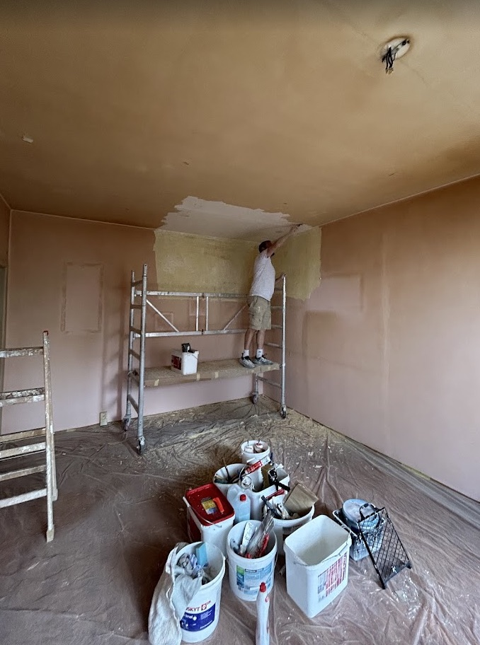
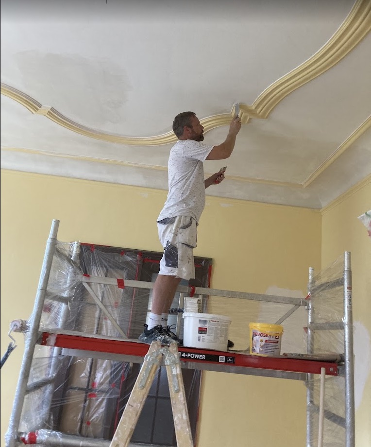

Malířské práce (interiéry)
Malba pokojů, kanceláří i společných prostor, od přípravy podkladu přes tmelení až po finální nátěr ve zvolené barvě. Práce po sobě uklízím tak, aby byt zůstal obyvatelný i během realizace.

Provádíme malby interiérů, fasádní nátěry, renovace dřevěných fasád a velkoplošné stříkání hal v Litoměřicích, Roudnici nad Labem a okolí.
Jmenuji se Michal Varchol a věnuji se malířským a lakýrnickým pracím, fasádním nátěrům a velkoplošnému stříkání průmyslových hal v Litoměřicích a okolí.
Na fasádách a při stříkání průmyslových hal pracuji s moderním zařízením Airless. Nátěr se díky němu nanáší rovnoměrně po celé ploše a schne rychleji, než kdybych plochu ošetřoval štětcem nebo válečkem.
Zakládám si na kvalitně odvedené práci, ověřených materiálech a dodržování domluvených termínů. Chci, aby výsledek vydržel a zákazník se na mě mohl spolehnout od první domluvy až po dokončení práce.

Malba pokojů, kanceláří i společných prostor, od přípravy podkladu přes tmelení až po finální nátěr ve zvolené barvě. Práce po sobě uklízím tak, aby byt zůstal obyvatelný i během realizace.
Nátěry dřevěných i kovových prvků, zárubní, radiátorů a nábytku na míru. Výsledek drží barvu i lesk podstatně déle než rychlokvašené řešení z marketu.
Odstranění starých nátěrů, ošetření dřeva a nanesení nových ochranných vrstev tam, kde obklad začíná šednout nebo se starý nátěr loupe. Fasáda tak vydrží další roky bez nutnosti kompletní výměny.
Ošetření a nátěr vnějších fasád, včetně přípravy povrchu a oprav drobných trhlin před samotným nátěrem. Odolnost vůči počasí a UV záření je u fasády vždycky na prvním místě.
Velké plochy ve výrobních halách a průmyslových objektech stříkám moderním zařízením Airless tam, kde štětec ani váleček nestačí. Rychlost provedení bez ztráty kvality povrchu.
Jedenáct záběrů přímo ze zakázek, od rozdělané práce po hotový výsledek. U fasád a hal jde často o nátěr stříkacím zařízením Airless. Filtrujte podle typu, nebo si klikněte na kteroukoli fotku pro detailní popis.
Zavolejte, napište nebo vyplňte poptávkový formulář. Ozvu se zpátky s návrhem a orientační cenou.